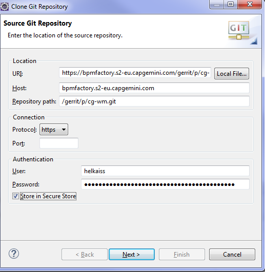
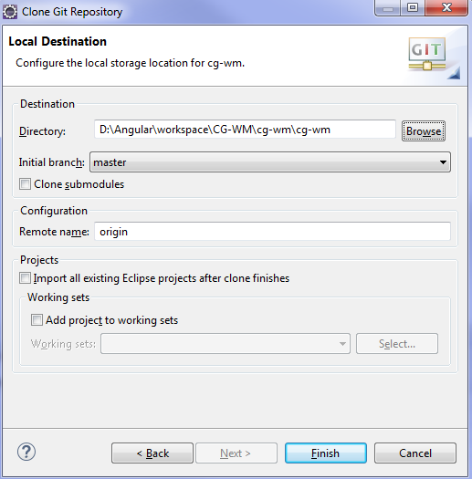
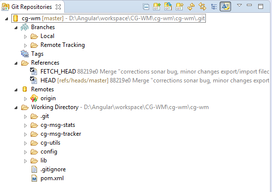
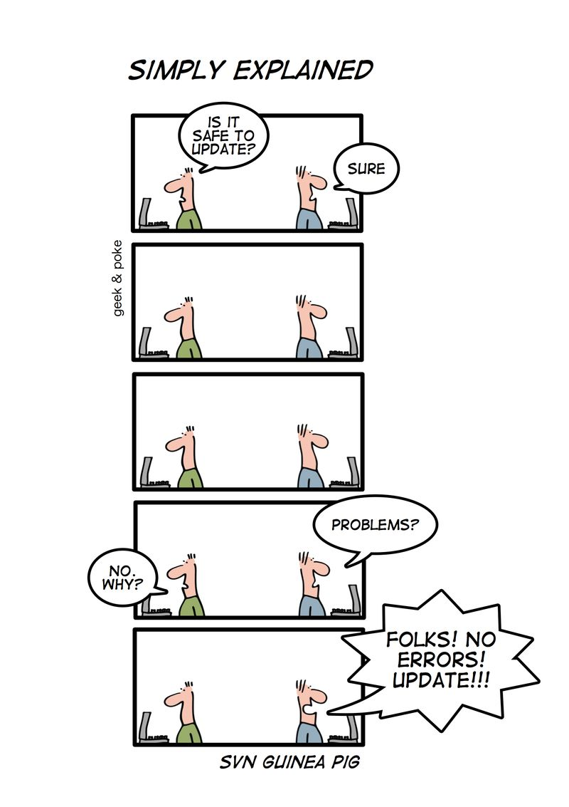
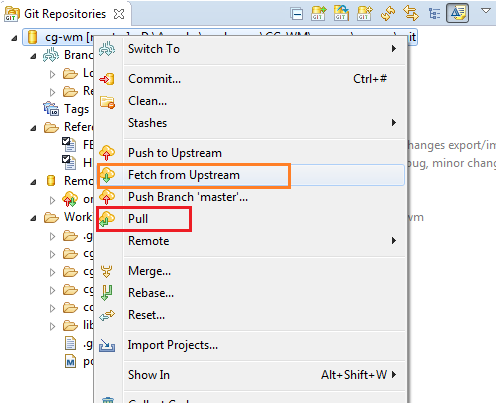
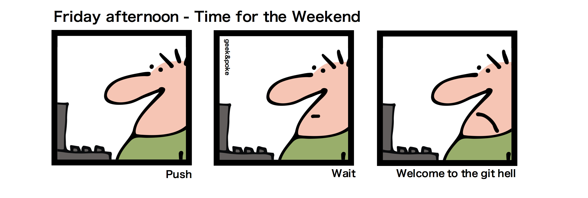
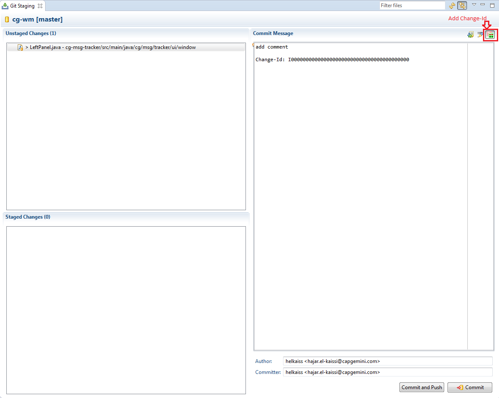
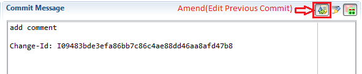
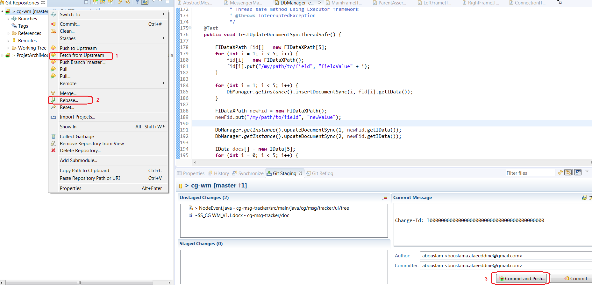
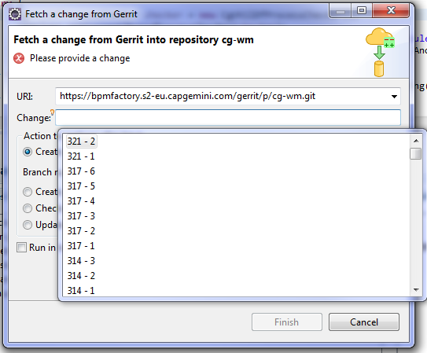

1. Eclipse
1.1. Installation
-
Install the latest Eclipse JEE. You can use your own, but no team support below Neon version.
-
Install SonarLint plugin
-
in order to connect to its local SonarQube server and be warned of violations in Eclipse, in real time
-
-
Install Enhanced Class Decompiler plugin
-
Enhanced Class Decompiler integrates JD, Jad, FernFlower, CFR, Procyon seamlessly with Eclipse and allows Java developers to debug class files without source code directly.
-
-
Install Git if you don’t already have it on your computer.
1.2. Configuration
Go to Window → preferences
1.2.1. Formatter
-
Click on formatter
-
Import this file
src/docs/CG.Eclipse.Preferences.Java.CodeStyle.Formatter.xml
1.2.2. Members Sort Order
-
Java → Appearance → Members Sort Order
-
Organize as follow
-
Static Fields
-
Fields
-
Types
-
Static Initializers
-
Initializers
-
Constructors
-
Static Methods
-
Methods
-
1.2.3. Save actions
-
Java → Editor → Save actions
-
Check as follow :
-
Perform the selected actions on save
-
Format source code
-
Format all lines
-
Format edited lines
-
-
Organize imports
-
Additional actions
-
Add missing @Override annotations
-
Add missing @Override annotations to implementations of interface methods
-
Add missing @Deprecated annotations
-
Remove unnecessary casts
-
Sort members excluding fields, enum constants, and initializers
-
Remove redundant type arguments
-
-
-
1.2.4. Encoding
-
Go to Window → Preferences → General → Workspace
-
At the bottom, choose
-
Other : UTF-8
-
Other : Unix
-
1.2.5. Unnecessary Code Detector plugin
-
Install Unnecessary Code Detector plugin to see unused declarations or wrongs declarations (public when it could be private for example), with this configuration :
-
Window > preferences > UCDetector
-
ActiveMode = MyMode
-
Ignore > [ ] Bean methods
-
Detect > File name pattern to search =
*.xml,MANIFEST.MF,*.tld,*.properties,*.jsp,*.jspf
-
1.2.6. JAutoDoc plugin
-
Install JautoDoc plugin to be able to :
-
add Javadoc with right click → Add Javadoc on a class or a package
-
add Javadoc on a function by selecting its name and pressing Ctrl+Alt+j
-
1.2.7. AutoDeriv plugin
The target folder should always be marked as derived, not to appear in searches. Install the AutoDeriv plugin for this purpose, and configure it by creating the file below.
|
It can be placed in the project’s root directory, then it would be shared to others through the source code repository, but this works only for the current projects, not submodules ! |
# set the 'target' and 'ext' folders as derived
target
#ext
# but don't affect the 'keep' sub-folder
!target/generated-sources
# all files with a '.dep' extension are generated
#*.dep
# this specific file is also generated
#src/include/version.h1.2.9. XML Line size
The Eclipse XML Formatter split lines, and this is an issue for wagon plugin in pom.xml.
-
Navigate to XML → Editor
-
Set Line width = 200
1.2.10. Disable stealing of focus by Console in Eclipse
There is one very annoying issue in Eclipse: stealing of focus by Console window.
Console window is displayed when you run application.
When you set focus to some other window like Search results and application prints something on output then Eclipse will automatically switch to Console window. Your search results are gone.
There is simple way how to get rid of such a behavior.
Go to Run/Debug → Console.
-
Show when program writes to standard out
-
Show when program writes to standard error
1.3. EGit with Gerrit

|
To generate your password in Gerrit, right click on your username → Settings → HTTP password → Generate Password |
-
Open Git perspective
-
Click on Clone a Git repository
-
Fill the required data :

-
Protocol = https
-
User = your CORP user
-
Password generated from Gerrit
-
Store in Secure Store

Enter your workspace in directory and then click on finish
After creating a new local Git repository, the Git repository of the project should have this structure:

To configure Git, go to Window → Preferences → Team → Git → Configuration, on User setting click on Open and enter the following configuration after updating it with your personal informations :
[gui]
recentrepo = F:\\git-repository\\cg-wm
[gerrit]
createchangeid = true
[user]
name = login
email = nvx mail
[branch]
autosetuprebase = always
[credential]
helper = manager
[credential "https://cric.pl.s2-eu.nvx.com/gerrit/p/cg-wm.git"]
[credential "https://cric.pl.s2-eu.nvx.com/gerrit"]
The "autosetuprebase = always" will allow you to do a fetch and a rebase by simply click on "pull".
On Repository Settings click on Open and enter the following configuration :
[core] repositoryformatversion = 0 filemode = false logallrefupdates = true [remote "origin"] url = https://cric.pl.s2-eu.nvx.com/gerrit/p/cg-wm.git fetch = +refs/heads/*:refs/remotes/origin/* push = HEAD:refs/for/master [branch "master"] merge = refs/heads/master rebase = true remote = origin
After this Git configuration, restart eclipse.
1.3.1. Checkout Git Repository

To update Git repository click right on parent and select :
-
"Pull" (If your git is configured to do a fetch and rebase on "Pull")
-
or "Fetch from upstream", and then "Rebase"

1.3.2. Commit / push

In order to commit a new change follow these steps:

-
Show view Git Staging (or go to perspective Git and select "Git Staging" tab)
-
Drag your file not committed from Unstaged Changes to Staged Changes
-
On Commit message add your message and click on Add Change-Id to add an ID for your commit (you add a new change ID only when your previous is validated by the tech lead on Gerrit)
-
Click on
-
Commit If you want to do a local commit (changes will be visible only by you)
-
or Commit and push If you want to do a commit on the shared repository
-
-
See the full review process in golden rules paragraph

This ID is related to your last change not yet validated.
1.3.3. Rebase
In order to get the last version of the git repository, or if one of your commit is in Merge Conflict on gerrit, you need to do a rebase. Before doing it, commit all your uncommited changes, otherwise you might lose it. After that you can click on team → fetch from upstream, then team → rebase. If your git is configured to do a fetch and rebase on pull, just select pull. If there is some conflicts during the rebase, correct them, then team → rebase → continue rebase. The rebase is done, you have the lastest version of the git repository and your modifications. You can amend your commit and the "Merge Conflict" on gerrit will disapear.
1.3.4. Reset Mixed
In team → reset, you can find a usefull functionnality called Reset Mixed. The reset mixed will allow you to get the last version of the git repository (after a fetch from upstream), while keeping your modifications. It works like a rebase, except that your commit will be cancelled on your local workspace. You will be branched on the last commit on the git repository. Use it if you want to abandon a commit, do a fresh commit, or merge two of your commits in one for example. Reset Hard can be used if you want to cancel all your modifications. All modifications will be erased.
1.3.5. End
-
Once your git is configured, import the project in your Java JEE view. (File → Import → type maven → Existing Maven Project).
You should now have the cw-wm project in your Java JEE view and some sub modules.
-
On the parent pom.xml in cg-wm, do:
-
mvn install (to have all dependencies)
-
mvn eclipse:eclipse (to create .project and .classpath).
-
If an error about tools.jar appears during maven install, it’s probably because the JRE is not well defined by eclipse. Install the last JDK and change the path to the JDK instead of the JRE (Window → preferences → Java → Installed JREs).
-
To start the MultiTracker, run the class cg-wm\cg-msg-tracker\src\main\java\cg\msg\tracker\Tracker.java
1.3.6. Troubleshooting
Two commits at the same time
If you have a commit on gerrit, and if you want to change a file that is already in this commit, you should amend this commit instead of making a second commit.
You can have two or more commits at the same time if they are not dependants. To do so, you have to do a reset mixed on the state before your first commit in order to commit the second one. It works like this : If A is the last commit on the git repository, you can do a first commit B. To make a second commit C, reset mixed on commit A, then commit. If you want to amend your commit B, reset mixed on A before doing it, and copy the description and change id for your commit on gerrit, to paste it like it is a new commit. You also need to select again the files that were in this commit.

Pull from another developer
To download a change of another developper from gerrit to your local :
-
go to Git Repositories on your Eclipse
-
right click on your repository
-
select fetch from Gerrit
-
on Change press Ctrl+Space
-
select your change
-
To change is of the form :
<(small) change number> - <patchset number>
-
The small change number is visible in gerrit page in the upper left area (clickable)
-
-
Click on finish
| If you don’t have the option fetch from Gerrit : Go to the Git repositories view, under your repo, in Remotes, right click on origin and select Gerrit configuration…. Check that everything is OK and click Finish. Now you should have the option. |

To keep this branch up to date with the master :
-
Go to Git Repositories
-
Right click on your repository > Pull
-
Navigate in you repository → Branches → Local
-
Rigth click on the master branch → Rebase On
-
Resolve the conflicts if any
To switch back to your master, right click on your repo → Switch To → master.
Missing Change-Id in commit message footer
On your first push, you might get this error from Gerrit
[f57ea8b] missing Change-Id in commit message footer
Processing changes: refs: 1
Processing changes: refs: 1, done
ERROR: [f57ea8b] missing Change-Id in commit message footer
Hint: To automatically insert Change-Id, install the hook:
gitdir=$(git rev-parse --git-dir); scp -p -P 29418 yremila@cdsdouane.pl.s2-eu.nvx.com:hooks/commit-msg ${gitdir}/hooks/
And then amend the commit:
git commit --amend
Doing a reset mixed on the initial commit would solve the problem.
If not, here is another solution :
-
Download this file https://gerrit-review.googlesource.com/tools/hooks/commit-msg
-
Put it in myproject/.git/hooks/
-
Restart Eclipse
-
Retry the commit
Last solution, requiring Cygwin :
gitdir=$(git rev-parse --git-dir); wget -P ${gitdir}/hooks/ http://bcouetil@cric.pl.s2-eu.nvx.com/gerrit/tools/hooks/commit-msg && chmod +x ${gitdir}/hooks/commit-msg
.classpath and other not-to-push files
If there are files in git repository not to be pushed, remove them in your next push :
-
Update the .gitignore file, if not already done
-
Go to Git Staging view
-
Right click on the file → Team → Untrack
-
The file should be moved to Staged changes (it can take a few seconds)
-
This will be taken into account in next Commit and Push…
See SonarQube for an older build
SonarQube does not have history available for browsing, you can only see the last build. So you have to retrigger the gerrit patch to see specific data associated to your change.
You can do an empty commit amend from Eclipse. But you can also retrigger from Jenkins.
-
Go to Jenkins homepage
-
Navigate to the pipeline/job
-
If your build is still in the history
-
Open it
-
Select Retrigger
-
-
Else if your build has been deleted
-
Go to Jenkins homepage
-
Click on Query and Trigger Gerrit Patches
-
In Query String, put your change-id
-
Click SEARCH
-
Select the change
-
Click TRIGGER SELECTED
-
Double remote : get latest commits from gitlab into gerrit
In the case of a gitlab to gerrit migration, you may have a common ancestor but commits on Gerrit and commits on Gitlab. It’s easy if you can replace the whole gerrit master, but here is the way to go for a clean merge :
-
have your gerrit clone in Eclipse
-
Navigate to Git view
-
Right click on your Remotes where there is already a Gerrit origin
-
Choos* Create Remote…
-
Create your gitlab remote while configuring fetch with only the master branch. Name it gitlab
-
right click on the new remote and choose fetch
-
right click on your repository and select pull
-
Finish by this in command line :
git push origin master